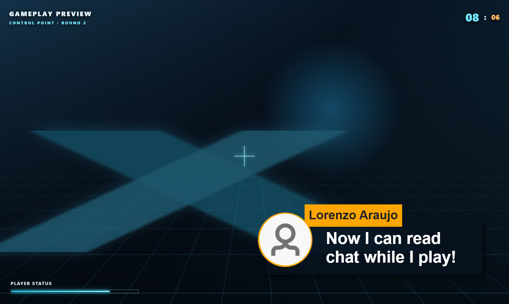
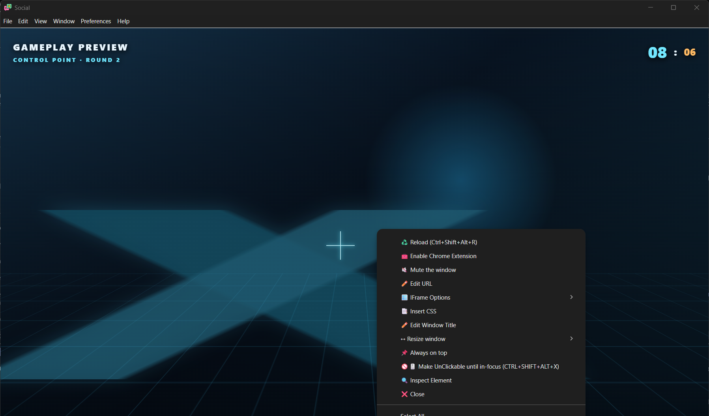
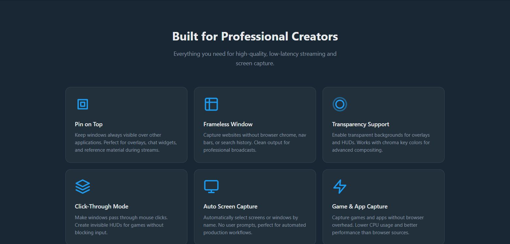

Yes, With A Desktop Overlay Window
Social Stream can sit above a game as a transparent, always-on-top window. This is a separate desktop window, not a game HUD injection.
You need a desktop wrapper. Use the Social Stream Ninja standalone app or Electron Capture. The browser extension and an OBS Browser Source cannot create a system-wide click-through window by themselves.
| Option | Best When | What It Adds |
|---|---|---|
| Social Stream standalone app | You already capture chat in SSApp and want the shortest setup. | Transparent popup windows, always-on-top, resizing, and click-through. |
| Electron Capture | You want exact size and position, reusable launch commands, or a dedicated overlay wrapper. | Frameless transparency, pinning, click-through, monitor selection, and command-line control. |
| Normal browser or OBS only | The chat should appear on the broadcast rather than privately on your monitor. | No reliable system-wide transparency or mouse click-through. |
Video Walkthrough
This older video shows the transparent, always-on-top, click-through chat setup. The app interface may look different in current versions.
Choose The Chat View
- Streaming Chat / Dock: shows the ongoing combined chat. This is usually the best choice while gaming.
- Featured Chat Overlay: shows one message selected from the Dock. Use this when you only want highlighted messages.
- Template or custom overlay: works too, as long as the page supports a transparent background.
Use the same session ID as your active Social Stream setup. In the Social Stream settings panel, open the options for the view you chose and enable Force transparent background. The generated URL should contain transparent.

Method 1: Social Stream Standalone App
- Install and open the standalone desktop app. Activate your chat sources normally.
- In the Social Stream settings panel, find Streaming Chat or Featured Chat Overlay.
- Open its options and enable Force transparent background.
- Click the generated Dock or Featured link from inside the standalone app. SSApp opens it as its own overlay window.
- Move and size the window before locking it. Right-click the overlay for size presets and select Always on top.
- When placement is finished, right-click it again and select Make UnClickable. Mouse clicks will pass through to the game.

SSApp Hotkeys
| Windows / Linux | macOS | Action |
|---|---|---|
Ctrl+Shift+Alt+X |
Command+Shift+Option+X |
Toggle mouse click-through so you can interact with the overlay again. |
Ctrl+Shift+Alt+R |
Command+Shift+Option+R |
Reload the focused overlay window. |
Positioning tip: transparent areas can be hard to grab. Keep the Dock menu visible while positioning it, use your operating system's window movement shortcuts, or use Electron Capture's --x and --y options for exact placement.
Method 2: Electron Capture
Electron Capture is a separate free, open-source app that can wrap a Social Stream URL in a transparent desktop window. It is often the easier option when you only want a dedicated overlay window.
- Copy your generated Social Stream Dock, Featured, template, or custom overlay URL.
- Make sure it includes
&transparent. If the URL has no question mark yet, use?transparent. - Open the URL in Electron Capture.
- Right-click its window and enable Always on top.
- Move and resize it, then enable Make UnClickable.
- Use
Ctrl+Shift+Alt+X(orCommand+Shift+Option+Xon macOS) to toggle click-through later.

Electron Capture Command-Line Launch
The portable Windows build is the simplest version to automate. Replace YOUR_SESSION_ID and adjust the size and position for your display.
Continuous Chat Dock
.\elecap.exe --url="https://socialstream.ninja/dock.html?session=YOUR_SESSION_ID&transparent&compact&hidemenu" --width=520 --height=760 --x=1380 --y=80 --pin --unclickable --title="SSN Chat"Featured Chat Only
.\elecap.exe --url="https://socialstream.ninja/featured.html?session=YOUR_SESSION_ID&transparent&hidesource" --width=700 --height=500 --x=1160 --y=80 --pin --unclickable --title="SSN Featured"macOS And Linux
# macOS
"/Applications/elecap.app/Contents/MacOS/elecap" --url='YOUR_OVERLAY_URL' --width=520 --height=760 --pin --unclickable
# Linux AppImage; replace the filename with the version you downloaded
./elecap-VERSION-x86_64.AppImage --url='YOUR_OVERLAY_URL' --width=520 --height=760 --pin --unclickable| Option | Purpose |
|---|---|
--url | The complete Social Stream overlay URL. Quote it because it contains & characters. |
--width, --height | Initial window size in pixels. |
--x, --y | Initial position in the virtual desktop. Negative coordinates may be valid for monitors placed left or above the primary monitor. |
--monitor=0 | Choose a zero-based monitor when a monitor index is easier than desktop coordinates. |
--pin | Start always-on-top. |
--unclickable | Start in click-through mode. Remember the recovery hotkey before using it. |
--css="C:\path\chat.css" | Inject a local CSS file for advanced styling. |
--multiinstance | Run a separate Electron Capture process when you need more than one independent overlay. |
See Electron Capture's complete command-line reference for additional parameters.
--node is not needed for a normal Social Stream overlay. Leave it off unless a page specifically needs screen capture or another elevated Electron feature.
Useful Overlay URL Options
| URL Option | Use |
|---|---|
transparent | Remove the page background and request a transparent desktop window. |
compact | Use a denser Dock layout. |
hidemenu | Hide the Dock toolbar after setup. |
scale=0.85 | Scale supported overlays down without changing window size. |
limit=15 | Limit the number of retained messages on supported pages. |
hidesource | Hide platform source labels or icons on supported overlays. |
onlytype=twitch,youtube | Only show selected platform types on supported pages. |
hidetype=discord | Hide selected platform types on supported pages. |
chroma=0000 | Alternative transparent background mode; useful when the Dock's normal transparent mode hides its scrollbar. |
For templates, custom CSS, fonts, and more URL controls, see the Overlay Customization guide.
Keep It On Your Monitor, Not On The Stream
The overlay stays private only when your streaming software captures the game or game window rather than the whole monitor.
- Do not add this overlay URL as an OBS Browser Source if viewers should not see it.
- On Windows, prefer an OBS Game Capture source targeting the game.
- Leave OBS's Capture third-party overlays (such as Steam) option off unless you have tested that it does not include this window.
- Avoid Display Capture for this workflow. It captures the entire monitor, including the chat overlay.
- Make a short local recording and watch it back before going live. Capture methods and games differ.
macOS and Linux limitation: OBS Game Capture is Windows-only. If your setup must capture the entire display, the on-screen overlay will also be captured. Use a separate monitor or a window/application capture method that excludes the overlay, then verify with a recording.
Important Limitations
- Borderless or windowed fullscreen is the reliable game mode. An exclusive fullscreen game may cover all normal desktop windows, including an always-on-top overlay.
- The desktop app must stay open. Closing SSApp or Electron Capture closes the local overlay.
- The session must match. A Dock or Featured URL with the wrong session ID will remain empty.
- Featured Chat is not the full feed. It only shows a message after you select one in the Dock.
- Click-through disables mouse interaction. Use the recovery hotkey before trying to right-click the window again.
- Some games and anti-cheat systems restrict overlays. Do not attempt to bypass a game's security controls.
- Transparency varies by operating system and graphics setup. Update the desktop app and graphics driver if a transparent area appears white or black.
- Display capture includes what you see. If you cannot isolate the game from the monitor in your capture software, this overlay cannot be guaranteed private.
Quick Checklist
- Chat is arriving in Social Stream.
- The overlay URL uses the correct session ID.
- The URL contains
transparent. - The desktop wrapper is pinned above the game.
- Click-through is enabled only after positioning.
- The game uses borderless or windowed fullscreen if exclusive fullscreen hides the overlay.
- OBS captures the game/window, not the entire display.
- A test recording confirms viewers cannot see the private overlay.